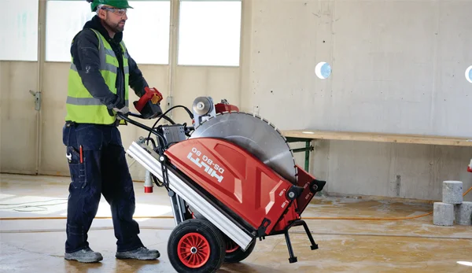
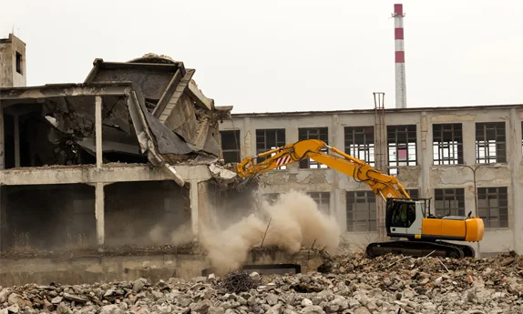
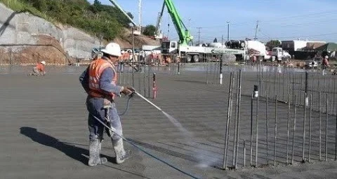
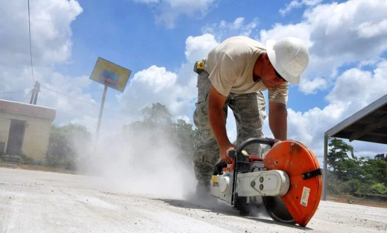
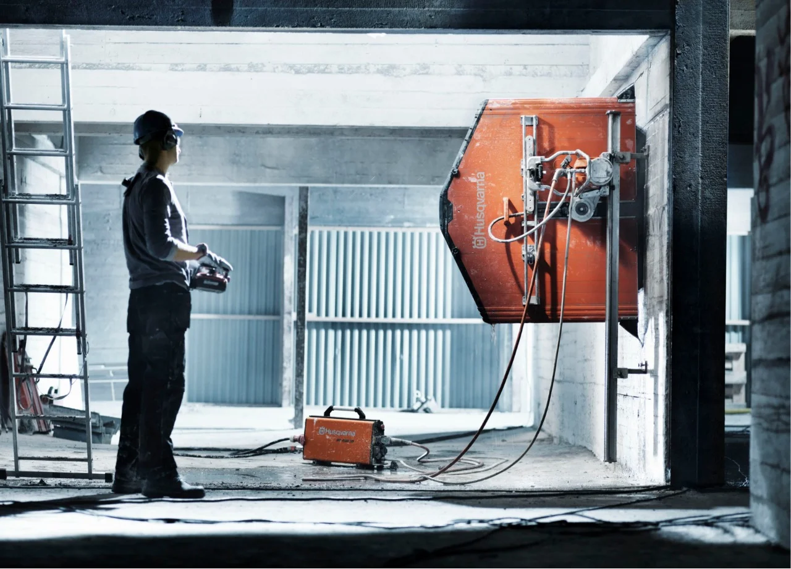
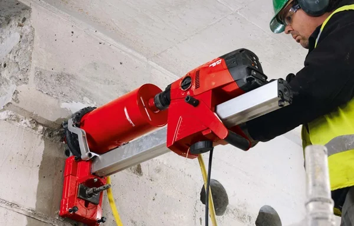

قص وتخريم الخرسانة
خدمة متخصصة في قص وتخريم الخرسانة بدقة عالية باستخدام أحدث المعدات والتقنيات المتطورة.
تعرف على أحدث خدماتنا ومشاريعنا في مجال قص الخرسانة وأعمال المقاولات
خدمة متخصصة في قص وتخريم الخرسانة بدقة عالية باستخدام أحدث المعدات والتقنيات المتطورة.
نفتح ونوسع الأبواب في الجدران الخرسانية بأمان تام ودقة متناهية لتلبية احتياجاتكم.
خدمة متخصصة في فتح وتوسيع النوافذ في الجدران الخرسانية بأعلى معايير الجودة والسلامة.

تقنية متطورة لقص الخرسانة بالليزر تضمن أعلى درجات الدقة والكفاءة في الأعمال الهندسية.
نحوّل مساحاتكم الداخلية عبر إزالة الجدران وتوسيعها لمنح مبانيكم مساحة أكبر وتهوية أفضل.

خدمة متخصصة في الهدم الجزئي للخرسانة بدون اهتزازات أو تصدعات تضر ببقية المنشأة.

خدمة احترافية لتقطيع وفصل الجدران الخرسانية بأحدث المعدات وبأعلى دقة وجودة.
نقوم بإزالة الجدران الخرسانية بأمان تام وبدون التأثير على الهيكل العام للمبنى.
نقدم استشارات هندسية متخصصة في مجال قص الخرسانة لتحديد أفضل الحلول لمشاريعكم.
تقنية متقدمة لتخريم الخرسانة باستخدام ضغط الماء العالي بدون غبار أو اهتزازات.
متخصصون في قص الخرسانة السميكة والجدران العازمة باستخدام معدات ذات قدرة عالية.
قص وإزالة الأعمدة الخرسانية بدقة متناهية مع الحفاظ على السلامة الهيكلية للمبنى.

خدمات متكاملة لمعالجة وإصلاح الخرسانة التالفة والشروخ لاستعادة قوة المنشآت.

قص وإزالة الخرسانة المسلحة بكفاءة عالية باستخدام أحدث المناشير السلكية والماسية.

نستخدم المناشير الماسية المتطورة لقص الجدران بدقة عالية مع أقل نسبة اهتزاز وغبار.

خدمة متخصصة في عمل فتحات كور في الخرسانة بأحجام مختلفة وبأعلى مستويات الدقة.
تواصل معنا الآن وسنقدم لك استشارة مجانية وعرض سعر مفصل